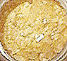
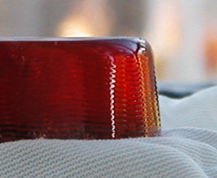

Les
autres résines
La gomme
adragante, est également traitée dans un article
spécifique de la section des liants.
Les résines figurant dans cet article-ci sont les moins employées et les moins
adaptées aux travaux artistiques habituels. Elles ne sont pas conseillées pour
des emplois en peinture traditionnelle, mais ne doivent pas être boudées pour
autant.
La colophane
On dit aussi arcanson, dérivé de Arcachon, lieu de
production (selon André Béguin). Le terme
colophane proviendrait lui de la ville de Colophon (Ionie).

C'est en théorie le résidu très acide et parfois très friable
de la fabrication de l'essence de térébenthine
(voir abiétate
et brai). En théorie, car comme le souligne
François Perego (pp. 221-224), on ne sait pas
toujours aujourd'hui distinguer une véritable origine végétale d'une origine
minérale et les éventuelles essences végétales ne se limitent pas aux pins
maritimes d'Arcachon. De plus il existe des produits dérivés, comme les
esters de colophane - des
corps gras -, mais ceux-ci semblent démontrer que l'on a bien affaire au
départ à un produit certes résineux mais surtout très essentiellement acide.
Comme le montrent nos deux illustrations, la colophane peut sensiblement
changer d'aspect selon la destination du produit. Ci-dessus, l'échantillon est
destiné à l'ébénisterie "fine".
Au-dessous, nous observons une massive et superbe colophane de musicien. Elle est quotidiennement utilisée pour l'entretien des archets.
Il existe d'ailleurs plusieurs qualités de colophanes de lutherie. Le
"grain" de la poudre créée par le frottement de l'archet est choisi
en fonction de la taille des cordes de l'instrument.
Quelle que soit sa destination, il s'agit d'une résine tendre, diluable à froid dans l'essence ou l'alcool
(préparation : voir Fabrication du médium maigre
dammar). Elle
est brillante sauf, bien sûr, quand elle est mêlée à de la cire, ce qui n'est
pas rare pour différents emplois.

Elle est d'ailleurs employée dans la fabrication
de cires à modeler.
Elle est utilisée dans la fabrication de vernis et médiums de mauvaise qualité.
Elle a servi dans la fabrication de très
mauvais papiers.
Elle aurait connu une utilisation traditionnelle en peinture décorative.
Sur l'aspect odoriférant de ce produit, lire
passage in Courrier des Lecteurs.
La gomme
sandaraque
Ce terme provient du grec sandarakê, signifiant réalgar (mort-aux-rats). Une étymologie
qui demeure pour nous très mystérieuse (merci
de nous communiquer toute information à ce sujet).
Il s'agit d'une très ancienne résine
pour vernis, à l'origine même du mot vernis.
De nos jours, elle est récoltée sur certain thuyas au Maroc et en
Algérie.
Assez insoluble, elle donne des résultats inférieurs aux résines mastic
et dammar malgré sa transparence. Parmi
ses défauts, on signale qu'elle est très cassante.
Elle se présente sous forme de larmes d'un jaune très pâle, comme le
mastic. Naturellement, elle est brune.
Elle est tombée en désuétude mais on la trouve encore dans les catalogues
de fournisseurs de très haut niveau.
Soluble dans l'alcool et
l'essence.
Le sang-dragon
ou sang-de-dragon
Résine exsudant de la tige du dragonnier (arbre tropical de la famille des
liliacées ayant une longévité des plus notables). Le nom de
l'arbre pourrait provenir de sang-dragon et non le contraire. L'origine du
vocable est donc mystérieuse. S'agit-il d'une altération poétique de
sandaraque ?
Utilisé autrefois comme colorant rouge - notamment comme colorant à vernis
ou comme laque - plutôt
fugace, le sang-dragon fut aussi employé autrefois comme astringent et hémostatique.
Il n'est pratiquement pas utilisé pour la peinture.
Il serait employé depuis des temps très reculés.
Il est soluble dans les solvants classiques.
Le sang-dragon est aussi une fleur.
L'élemi
ou élémis
C'est un adjuvant plus qu'une résine à médium, à vernis ou à
laque à part entière. Employé dans les vernis durs, il agit comme
assouplissant léger car il s'agit quand même d'une résine assez dure.
Comme la gomme
laque, l'élémis est soluble dans l'alcool.
La
gomme gutte
Ce n'est pas une résine destinée aux médiums et vernis.
Elle est traitée
dans l'article sur les pigments jaunes.
On mentionnera juste dans cet article le fait qu'elle est soluble dans
l'alcool, comme la gomme laque.
Gomme
dite de Xanthan ou de Botany Bay
Originaire d'Australie, elle aurait un comportement proche de celui de la gomme
laque de Coromandel. Nous manquons d'information à son sujet.
Autres
résines
La gomme kauri, la gomme Manille, la gomme Pontianak. Nous
manquons d'informations à leur sujet.
Retour
début de page